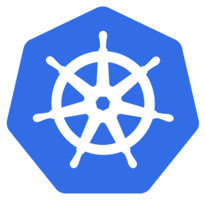
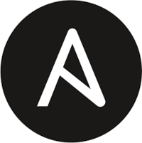
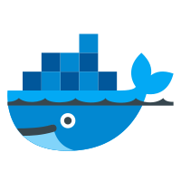
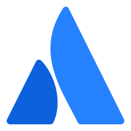
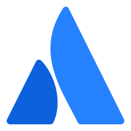

Karla Mouray
Cabo Frio - RJ
(22) 98854-9975
karlamouray@gmail.com


Ferramentas
 
 

.png)
Resumo de Qualificações
Me chamo Karla , tenho 27 anos Nasci em Porto Alegre, moro no Rio de Janeiro, Cabo Frio. “A chave para o sucesso é fazer o que você ama e amar o que você faz”. Certamente já ouvi muitas frases desse tipo, no entanto, essa em especial sempre fez todo o sentido para mim. Passei por setores distintos até encontrar o que eu realmente gosto, mas em todos eles fiz a minha função com zelo. Apaixonada por conhecimento e por novas tecnologias. Estou focada na transição para área de DevOps, desenvolvendo habilidades como infraestrutura como código (Ansible e Terraform), computação em nuvem com foco na certificação Azure , containerização e orquestradores de containers (Kubernets e Docker Swarm), aplicação e gerenciamento de microserviços e estudos sobre as práticas Agile.

Conhecimentos
Devops
microserviços
Jenkins
Spinnaker
Harness
Kubernetes
ingress
Rancher
Formação
Acadêmica
Engenharia de Software
De Sistemas
Bacharel - 2024
Universidade São Francisco- USF
Análise e Desenvolvimento De Sistemas
Técnologo - 2022
Universidade São Francisco- USF
Conhecimentos
AWS
IAM
EC2
Lambda
Elastic Beanstalk
RDS
Route53
CloudFront